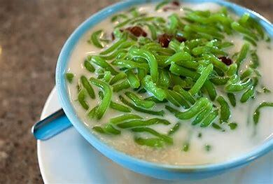
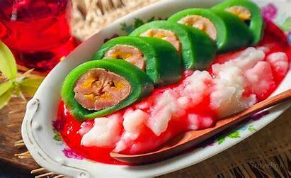
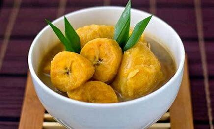
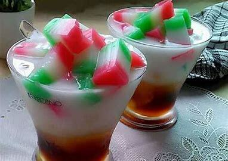

Di Posting Oleh Zahra Salsabila

Es Dawet atau Cendol
Bahan - Bahan
Bahan Utama
30 gr tepung beras (asli 70 gr)
60 gr tepung tapioka
90 gr tepung hunkwe (asli 40 gr)
Sejumput garam
700 ml air (asli campur jus pandan)
Essence pandan
Bahan Kuah Gula Merah
200 gr gula merah
3 sdm gula pasir
200 ml air
Daun pandan
Bahan Kuah Santan
200 ml santan kara
300 ml air
Sejumput garam
Daun pandan
Cara Membuat
a. Membuat cendol: campur tepung dan garam, lalu aduk. Masukkan air sedikit demi sedikit, lalu tambahkan essence pandan. Saring agar tekstur tidak kasar.
b. Masak adonan hingga kental dan matang. Siapkan air dalam mangkuk dan beri es batu.Tuang adonan pada cetakan, dan tekan di atas air es. Lakukan hingga habis.
c. Membuat kuah gula merah: masak semua bahan hingga mencair dan sedikit kental. Angkat, lalu sisihkan.
d. Membuat kuah santan: campur semua bahan, dan aduk hingga mendidih. Jangan sampai santan pecah. Jika sudah mendidih, matikan api.
e. Penyajian: ambil gelas, dan beri air gula. Masukkan cendol dan beri kuah, lalu tambahkan es. Siap disajikan.
Di Posting Oleh Zahra Salsabila

Es Pisang Ijo
Bahan - Bahan
Bahan Utama
14 buah pisang raja kecil
Bahan Kulit
130 gr tepung beras
160 gr terigu
1 sdm tapioka
1 bungkus santan instan 65 ml
3 sdm minyak sayur atau margarin
550 ml air
50 gr gula pasir
½ sdt garam
Pasta pandan secukupnya
Bahan Bubur Sum-Sum
130 gr tepung beras
1000 ml air santan
Sekitar 1 sdt gula pasir
Sekitar 1 sdt penuh garam
Daun pandan
Cara Membuat
a. Kukus pisang sekitar 10 menit, biarkan sebentar, lalu buka tutupnya. Tunggu hingga dingin, baru kupas kulitnya.
b. Campur tepung, gula, garam, dan aduk rata. Tambahkan air, santan, pasta pandan, dan aduk rata. Saring agar adonan halus.
c. Tambahkan minyak sayur atau margarin agar lebih enak. Lalu, aduk-aduk di atas kompor hingga adonan mengental dan kalis. Biarkan hingga suhunya suam-suam kuku, lalu bagi menjadi beberapa bagian sesuai banyaknya pisang.
d. Ambil 1 bagian adonan kulit. Pipihkan dengan lambaran plastik yang sudah dioles sedikit minyak sayur.Ambil pisangnya, bungkus rapat, dan rapikan. Lakukan untuk semua pisangnya.
e. Setelah itu, bungkus masing-masing pisang dengan daun pisang. Jika tidak ada, bisa juga dengan plastik anti-panas. Kukus sekitar 20 menit dengan api sedang cenderung kecil.
f. Untuk bubur sumsum campur tepung, air santan, gula dan garam. Berikan daun pandan yang diikat agar wangi.Aduk rata agar tidak ada gumpalan. Nyalakan kompor dengan api agak kecil.
g. Aduk-aduk hingga mengental. Kemudian, tes rasa. Biarkan beberapa saat sambil diaduk terus meski sudah mengental.Angkat dan tempatkan di wadah agar tidak mudah mencair.
h. Tuang bubur sum-sum di wadah, tata pisang ijo, berikan es batu, lalu tuang sedikit sirup pisang ambon atau cocopandan. Siap disajikan!
Di Posting Oleh Zahra Salsabila

Es Kolak Pisang
Bahan - Bahan
250 gr labu kuning/parang
2 buah pisang kepok
½ kg kolang-kaling
1 daun pandan
2 btr / 100 gr gula aren
3 sdm gula pasir / sesuai selera
1 sdt garam
1 bks santan cair instant
1 liter air
Cara Membuat
a. Siapkan semua bahan. Cuci bersih labu parang, potong sesuai selera. Cuci bersih kolang-kaling, boleh dipotong, boleh tidak, sesuai selera. Kemudian, potong pisang menjadi 5 bagian atau sesuai selera.
b. Didihkan air dan daun pandan dalam panci. Setelah mendidih, masukkan potongan labu dan kolang kaling, tunggu hingga mendidih. Lalu masukkan potongan pisang. Tambahkan gula aren, gula pasir, dan garam, tunggu hingga gula larut.
c. Masukkan santan sambil diaduk perlahan agar santan tidak pecah, tunggu hingga mendidih kembali. Resep minuman segar ini siap disantap untuk buka puasa.
Di Posting Oleh Zahra Salsabila

Es Selendang Mayang
Bahan - Bahan
Bahan Utama
1 sachet tepung hun kwe 95gr
50 gr tepung beras
1 liter air
2 sdm gula pasir
½ sdt garam
½ sdt vanilli powder
Secukupnya pewarna makanan warna merah dan hijau
Bahan Saus Gula Merah
200 gr gula merah
100 ml gula pasir
200 ml air
2 lembar daun pandan
1/4 sdt garam
Bahan Kuah Santan
2 sachet santan instan 60 ml
500 ml air
1 lembar daun pandan
1/2 sdt garam
Cara Membuat
a. Siapkan bahan, campurkan semua bahan selendang mayang kecuali air dan pewarna. Lalu tambahkan air sedikit demi sedikit hingga airnya habis.
b. Aduk hingga tidak ada yang menggumpal tepungnya dan hingga gula larut. Kemudian bagi adonan menjadi 3, tuang dalam wadah yang berbeda.
c. Beri warna merah dan hijau pada wadah yang berbeda, aduk hingga tercampur rata dan 1 wadah biarkan berwarna putih.
d. Siapkan panci, masak adonan yang berwarna hijau terlebih dahulu. Masak hingga mengental. Kemudian tuang ke dalam wadah dan ratakan.
e. Lalu masak adonan yang berwarna putih hingga mengental. Kemudian, tuang ke dalam wadah yang sama dan ratakan.
f. Lakukan hal yang sama pada adonan berwarna merah, masak hingga mengental, lalu masukkan ke atas adonan putih dan ratakan. Biarkan hingga dingin dan mengeras.
g. Masak bahan santan dengan cara mencampur semua bahan, masak hingga mendidih. Begitupun saus gula merah, masak semua bahan gula hingga larut dan mendidih. Dinginkan dan sisihkan.
h. Cara penyajian, potong-potong selendang mayang dengan pisau tajam, lalu tata dalam mangkuk.Siram dengan saus gula merah, santan dan es batu.